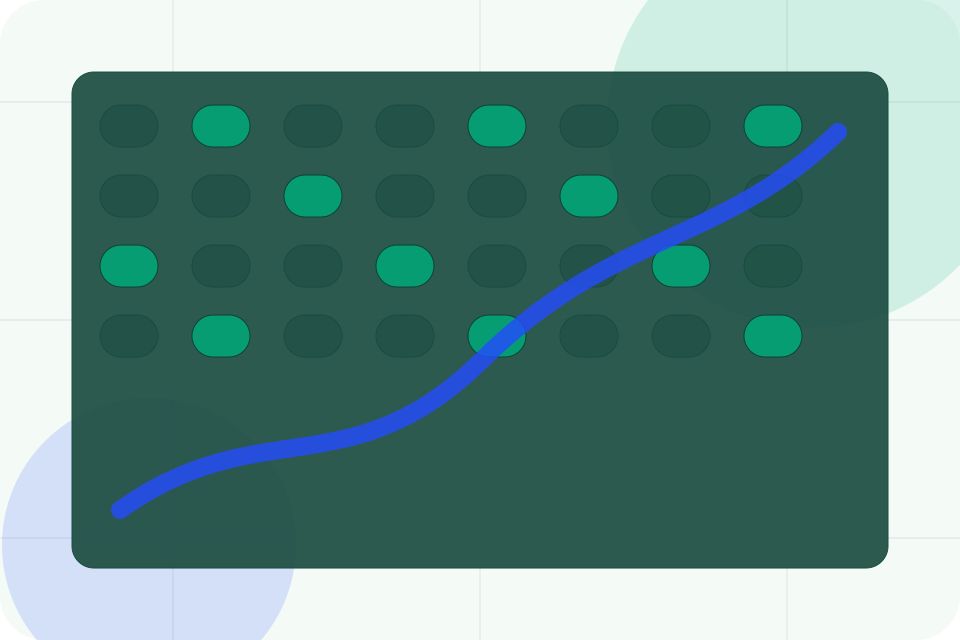

ASH-TRA static portfolio support
Terms of Use
This static portfolio site demonstrates a premium ASH-TRA build for Environmental, Sustainability & Climate Services. Content is informational and must be reviewed by the final client for legal, operational, pricing, and regulatory accuracy before publication.
Information is provided for planning and should be reviewed for the final client, location, and operating rules.
Visitors should treat pricing, availability, service descriptions, credentials, and policy language as demonstration material until the final business owner approves live terms.